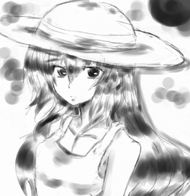
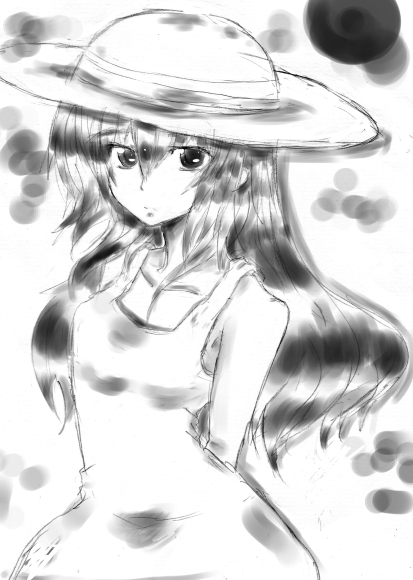

現代編シナリオ：サバイバルデイズ
- プレイヤー人数
- ４人
- プレイ時間
- ５時間
- 想定PC
- 初期作成×４人
予告
胸の鼓動が絶える日のことを、想ったことはあるだろうか。
その鼓動を維持するためにどれだけのものが必要か、考えたことはあっただろうか。
死が思ったほど遠くにはないということを、君は今まで知っていただろうか。
正解を求めても、この場にはない。君たちが答えを出すしかない。
責を預けられる誰かなどいない。君たちのそれぞれが背負うしかない。
守ってくれる社会 などない。君たちが、――その命を賭けて、戦うしかない。
憔悴の少女は地に伏せる。
風雨は容赦なくやってくる。
そして、
不条理は幾重にも――幾重にも、その身を連ねて迫ってくる。
抗え。そして立ち向かえ。
例え僅かなものだとしても、＜知識 ＞は君たちの中にある。
知恵を巡らせ工夫を凝らし、暴威に耐え抜き、敵に打ち勝て。
己を鍛え、仲間を助け、未踏の道を切り開け。
死の運命から逃れるために。
絶海の地より抜け出すために。
帰るべき場所へ、
進むべき未来へ、
掴むべき夢の先へ、
君たちが“君たち”として辿り着くために。
サバイバルTRPG「LOST」
無人島漂流記
生き延びろ。希望は、命の先にある。
レギュレーション
- 現代が舞台。日本はまだ終わっていない……はず。
- 25歳以上のPCも作成可能。
- キャラ作成時に買い物なし。
- キャンプ・施設なし。
- 漂流した経緯を各自考えておくこと。思いつかない場合、漂流表を振ってもよい。
- 島から脱出したいキャラクターであること。思いつかない場合、残してきたもの表をふってもよい。
- ニューエイジをサイキックと読み替え。【突然変異】のアビリティは取得不可。
- 「成功度」ルール使用。
- 「撤退の指定特技変更」ルール使用。
- 「知恵と工夫」ルール使用。
- 「追加アビリティ」使用。
- 「追加クラス」使用可能。
- アキンドの【値切り】【人脈】は使用不可。
| 出目 | 経緯 | |
|---|---|---|
| 1 | 脱走 | あなたは逃げ出し、海に身を投じた。 |
| 2 | 沈没 | 乗っていた船が沈没した。 |
| 3 | 落下 | 乗っていた飛行機が落ちた。 |
| 4 | ゲーム | あなたは命を賭けて莫大な賞金を得るゲームに挑戦した。ヘリから落とされた。 |
| 5 | 記憶喪失 | あなたは目を覚ます前の記憶を覚えていない。 |
| 6 | 漂流 | あなたは流された。遠くなっていく陸を目にしながら意識を失った。 |
| 出目 | 経緯 | |
|---|---|---|
| 1 | 日常 | 炊きたてのご飯。温かい布団。当たり前の幸せ。 |
| 2 | 夢 | あなたの夢はこんな島では叶わない。 |
| 3 | 大切な人 | いなくなってきづいたんだ。 |
| 4 | 財産 | あなたの大事なものはここにはない。 |
| 5 | 約束 | 絶対に破らないと約束したあの日の記憶。 |
| 6 | 場所 | いるべき場所はここじゃない。 |
予告：プレイヤー公開用
キャンプフェイズ
このシナリオにキャンプフェイズはありません。代わりに導入フェイズとなります。導入フェイズ
オープニング
PCたちが無人島で目を覚まして出会うシーンです。
目覚め
まずプレイヤー全員は1D6を振ります。 「[出た目J以下]のアイテムを1つ」PCの初期装備として選ぶことができます。 また、PCの体力をその出目の分だけ減少させます。
出た目が一番小さいPCが最初に目を覚まします。 目覚めたPCは自分が白い砂浜に打ち上げられている事に気づきます。 流れ着いた船の残骸、倒れている他のPCを発見します。
また、NPCの少女「山城 沙雪（やましろ さゆき）」を発見します。 彼女はぐったりしており、誰かが指定特技《手当》の判定に成功すると目を覚まします。 この判定にはPC1人につき1回試みることができ、全員が失敗すると彼女は死にます。 死亡してしまった場合、以降は彼女についての記述を読み飛ばしてください。
自己紹介
手当を受けて目覚めた沙雪はお礼をいい、自己紹介をします。 沙雪は白いワンピースを着た肌の白いほっそりとした少女です。身体の弱いお嬢様です。 両親と海外旅行をしていたら、嵐に巻き込まれて船が沈没してしまい、ここに流れつきました。 PCたちにも自己紹介を促してください。
セリフ例
沙雪：「え、ここは…？ 私はたしか、船にのっていて……。あっ、あなたたちが助けてくれたのですね。
あの、ありがとうございます。私は山城沙雪といいます」
正座をしてふかぶかと三指ついてお礼を言う。
|  |
16歳。 両親と海外旅行をしていたら、嵐に巻き込まれて船が沈没。この島に流れつく。 性格は丁寧でおしとやか。 マイペースで少々天然気味。 ほうっておくと死ぬ。 元気が回復したらお嬢様の嗜みとしての習い事の成果で助けてくれるかも。 →大きい画像 |
現状確認
全員の自己紹介が終わったら、次はどうしようという話になるはずです。 PCから言い出さないならば、沙雪が提案してください。 まずは周囲を確認です。沙雪は調子が悪いので、ここで休んでいるといってPCたちを見送ります。 手分けをして周りの確認をし、1時間ほどしたら一旦合流しようと提案してください。 また、各PCは《見つける／頭部4》で漂流物回収の判定を行えます。 [成功度×2]個の【素材／船】を得ることができます。 【素材】については後述します。
ここで、GMは浜からいける2つのチェックポイントを示します。 １つは川。上流からの川の流れを見つけます。 １つは林。浜辺の向こうは南国風の木々が茂る林です。 また、小高い岩山が見えることも伝えてください。 海のほうをみると綺麗な水平線が見えます。陸地は見えません。
リミット宣告
PCたちが周囲の確認を終え、戻ってくると沙雪がぐったりと倒れています。 高熱がでており、しっかりした休養・食事が必要です。 3サイクル以内に『屋根』『壁』『寝床』の施設を用意できなければ、沙雪は死にます。
このあとは探索フェイズに入ります。今回の特殊ルールを説明してください。
特殊ルール
- 沙雪のいる場所を拠点として扱う。沙雪が死んでしまっている場合、何処か好きな場所を拠点とすること。
- PCは一度行ったことのあるチェックポイントに各サイクルの最初に移動することができる。
- この移動でランダムエンカウントは（まだ）発生しない。
- 戦闘が起きた場合、同じチェックポイントに移動したPC同士であれば戦闘に参加できる。
- 各チェックポイントにあるオブジェクトでは、【素材】や【食料】を手に入れることができる。
- オブジェクトには「利用回数」が決められているものがある。利用回数に達したオブジェクトへは以降接触できなくなる。
- オブジェクトで「素材入手」と書かれていた場合、任意の特技で判定し、その[成功度×2]個の【素材】が手に入る。
- オブジェクトで「食料入手」と書かれていた場合、任意の特技で判定し、その[成功度×2]個の【食料】が手に入る。
- 両方書かれているオブジェクトは、判定前にどちらを行うか宣言すること。
- 所持限界に注意。片手には重量に関係なく１つアイテムを持てることも忘れない。【素材】に関しては、両手に他に何も装備していなければ５つ持てることにも注意。
- 同じチェックポイントに仲間がいる場合、持ちきれなかった【素材】や【食料】を渡すことができる。
- サイクルの終了時に拠点に全員集まり、「夕べの集い」を行う。
- 「夕べの集い」では【素材】や【食料】を消費して施設やアイテムを作ることができる。
シナリオアイテム制作表を参考。
- アイテム作成の判定は、通常の行為判定と異なり、代用判定の目標値が[表の基本目標値＋習得している特技から《指定特技》までのマス数]となる。
- 判定に失敗すると使用した素材は失われる。素材があるかぎり再挑戦可能。
- 「【素材／森】×3or【素材／獣】×3」のように書かれている時は、「【素材／森】×2and【素材／獣】×1」のように2種類に分割して消費してもよい。
- 施設のレベルは建設と同じだけの【必要素材】を消費することで上げることができる。
- 常駐型の施設を建てた場合、それによる【気力基準値】や【体力基準値】の増加は「夕べの集い」の最後に反映され、その分だけ【気力】や【体力】の現在値も増加する。
- 「夕べの集い」では各PCは【食料】を１つ消費しなければならない。消費できない場合、【体力】と【気力】が半分になる(端数切り上げ）。
- 「夕べの集い」では（３サイクル目まで）沙雪に対して【食料】を１つ消費しなければならない。消費できない場合、翌朝沙雪は冷たくなって発見される。
- 「夕べの集い」で使いきれなかった【素材】や【食料】は拠点においておける。
- 「夕べの集い」では【素材】や【食料】を消費して施設やアイテムを作ることができる。
シナリオアイテム制作表を参考。
- 探索フェイズでもタイプ：支援の施設を使用することができる。
- 探索フェイズに探索表を振ることは出来ず、休憩はシナリオ専用の休憩表を使用する。
| 浜辺 | 川 | 林 | 草原 | 滝 | 森 | 岩礁 | 沼 | 山 | 山頂 | 入江 | |
|---|---|---|---|---|---|---|---|---|---|---|---|
| 浜辺 | ◯ | ◯ | |||||||||
| 川 | ◯ | ◯ | ◯ | ◯◯ | ◯ | ||||||
| 林 | ◯ | ◯ | ◯ | ◯ | |||||||
| 草原 | ◯ | ◯ | |||||||||
| 滝 | ◯ | ◯ | △ | ||||||||
| 森 | ◯ | ||||||||||
| 岩礁 | ◯ | × | |||||||||
| 沼 | ◯ | △ | |||||||||
| 山 | △ | △ | |||||||||
| 山頂 | △ | ||||||||||
| 入江 | × | △ |
| 名前 | 価格 | 重量 | タイプ | 部位 | 指定特技 | 対象 | 特性 | 効果 |
|---|---|---|---|---|---|---|---|---|
| 素材／森 | - | 1 | 道具 | （両手） | - | - | 森でとれるもの。枝、葉、樹皮、ツタ、木の実など。両手に何も装備していなければ５つまで重量に関係なく持つことができる。 | |
| 素材／山 | - | 1 | 道具 | （両手） | - | - | 山でとれるもの。黒曜石、水晶、岩など。両手に何も装備していなければ５つまで重量に関係なく持つことができる。 | |
| 素材／獣 | - | 1 | 道具 | （両手） | - | - | 獣からとれるもの。毛皮など。両手に何も装備していなければ５つまで重量に関係なく持つことができる。 | |
| 素材／船 | - | 1 | 道具 | （両手） | - | - | 船においてあったもの。ロープ、ペットボトル、樽、食器など漂流物一般。【素材／森】や【素材／山】の代用としても使える。両手に何も装備していなければ５つまで重量に関係なく持つことができる。 | |
| 食料 | - | 1 | 支援 | （両手） | - | 自身 | 食料 | 食料。【気力】が1点増加する。 |
| アイテム名 | 必要素材 | 指定特技 | 基本目標値 | 素材例 |
|---|---|---|---|---|
| ベルトポーチ | 【素材／森】×6 | なし | なし | 細いツル、丈夫な樹皮。 |
| リュックサック | 【素材／森】×6 | なし | なし | 細いツル |
| 肩掛けカバン | 【素材／森】×6 | なし | なし | 細いツル |
| 手提げカバン | 【素材／森】×4 | なし | なし | 細いツル |
| トランクケース | 【素材／船】×5 | 《探索／技術3》 | 5 | 漂流物 |
| ほうちょう | 【素材／山】×2 | 《作る／技術8》 | 5 | 黒曜石 |
| ナタ | 【素材／山】×2 and 【素材／森】×1 | 《作る／技術8》 | 7 | 固い枝、黒曜石 |
| カタナ | 【素材／船】×6 | 《探索／技術3》 | 9 | 漂流物 |
| 槍 | 【素材／森】×3 | 《斬る／腕部4》 | 5 | 硬く長い枝 |
| 棍棒 | 【素材／森】×2 | なし | なし | 丈夫な枝 |
| なべぶた | 【素材／森】×2 | 《作る／技術8》 | 5 | 木の板 |
| バール | 【素材／船】×3 | 《作る／技術8》 | 5 | 鉄パイプ |
| ハンマー | 【素材／森】×5 and 【素材／山】×2 | 《締める／腕部12》 | 5 | 丈夫な枝、しなやかなツタ、石 |
| スリング | 【素材／森】×3 | 《作る／技術8》 | 7 | 細いツル |
| 弓 | 【素材／森】×4 | 《作る／技術8》 | 9 | しなる枝、細いツル |
| 矢 | 【素材／森】×1 | 《斬る／腕部4》 | 5 | 木の枝 |
| 矢筒 | 【素材／森】×2 | なし | なし | 大きな葉 |
| レザー | 【素材／獣】×5 | 《作る／技術8》 | 5 | 毛皮 |
| 安全ブーツ | 【素材／獣】×5 or 【素材／森】×5 | 《作る／技術8》 | 5 | 毛皮、丈夫な樹皮 |
| 篭手 | 【素材／獣】×5 or 【素材／森】×5 | 《作る／技術8》 | 5 | 毛皮、丈夫な樹皮 |
| なべ | 【素材／獣】×5 or 【素材／森】×5 | 《作る／技術8》 | 5 | 骨、丈夫な樹皮 |
| ロープ | 【素材／森】×2 | なし | なし | 丈夫なツタ |
| 火付け道具 | 【素材／森】×2 or 【素材／山】×2 | なし | なし | 木の枝+木の皮、石英+鉄鉱石 |
| たいまつ | 【素材／森】×3 | なし | なし | 木の枝、松脂 |
| 毛布 | 【素材／獣】×2 | なし | なし | 毛皮 |
| 寝袋 | 【素材／獣】×4 | 《作る／技術8》 | 7 | 毛皮 |
| 釣り竿 | 【素材／獣】×3 or 【素材／船】×3 | 《作る／技術8》 | 5 | テグス、腱、釣り針、骨 |
| 嗜好品 | 【食料】×3 | 《料理／技術10》 | 5 | |
| なんこう | 【素材／森】×3 or 【素材／獣】×2 | 《手当／技術5》 | 5 | 薬草、脂 |
| ばんそうこう | 【素材／森】×1 or 【素材／獣】×1 | なし | なし | 薬草、脂 |
| 鎮痛剤 | 【素材／森】×5 | 《手当／技術5》 | 9 | 薬草、脂 |
| アイテム名 | 必要素材 | 素材例 |
|---|---|---|
| 寝床 | 【素材／森】×15 or 【素材／獣】×15 | 細いツル、丈夫な樹皮。 |
| 屋根 | 【素材／森】×10 or 【素材／獣】×10 | 大きな葉、毛皮 |
| 物見やぐら | 【素材／森】×15 | 大きな枝、丈夫なツタ |
| 食料庫 | 【食料】×15 | |
| ドラム缶 | 【素材／船】×3 | |
| お風呂 | 【素材／森】×5 | |
| 畑 | 【素材／森】×10 | |
| 食堂 | 【素材／森】×10 | |
| 薬草園 | 【素材／森】×10 | |
| 脱出船 | 【素材／船】×30 and 【素材／森】×30 and 【食料】×30 | ※作成すると結果フェイズとなる。 |
| 出目 | 結果 |
|---|---|
| 2 | 茂みががさがさとなっている。《隠れる/環境6》の判定に失敗すると、 ランダムエンカウント表を振る。 成功した場合、【気力】が[「基準値」の半分]点増加する。 |
| 3 | 地上に安全なところが見つからない。木の上で休まなければ。 《バランス/環境8》の判定に成功すれば、【気力】が3点増加する。 失敗した場合、落下して1点のダメージを受ける。「ロープ」があれば、 判定の必要なく休むことができる。 |
| 4 | ケモノの声がうるさい。あなた以外の誰か1人を見張りとして選ぶ。 見張りが《聴く/頭部2》の判定に成功しないとあなたは休めない。 休めた場合、あなたの【気力】が4点増加する。 |
| 5 | 雨が降ってくる。雨宿りできるものがない場合、《見つける/頭部4》の判定に 成功しなければ休めない。休める場合、【気力】が3点増加する。 「火付け道具」を持っていればさらに【気力】が3点増加する。 |
| 6 | 腰掛けるのに丁度いい場所をみつけ、そこから風景を眺めながら仲間1人と語り合う。 1D6を振って話をテーマを決める（1.失った/失いたくないもの、2.故郷のこと、3.漂流した経緯、4.欲しいもの、5.過去、6.恋バナ）。 その後、仲間を1人選び、話をする。話ができたら、あなたと仲間は【体力】が1点増加する。 話が浮かばない場合、《聞く/頭部2》の判定に成功したら、 【体力】を獲得してもよい。 |
| 7 | 眠れない夜。仲間1人と語り合う。1D6を振って話をテーマを決める （1.悩み、2.将来・夢、3.好きなもの、4.嫌いなもの、5.過去、6.恋バナ）。 その後、仲間を1人選び、話をする。話ができたら、あなたは[「基準値」の半分]点、 仲間は2点【気力】が増加する。 話が浮かばない場合、《伝える/技術11》の判定に成功したら、 【気力】を獲得してもよい。 |
| 8 | 目が覚めたら、仲間の料理がちょうどできた所だった。【気力】を3点増加させる。 さらに、料理当番として仲間を1人選ぶ。料理当番が《料理/技術10》に成功した場合、 全員が2点の【気力】を増加させる。失敗した場合、全員の【気力】が1点減少する。 |
| 9 | 仲間と模擬戦をしてから眠りにつく。【気力】が3点増加する。 相手として仲間1人を選ぶ。相手が《振る/腕部11》の判定に成功すると、 次の戦闘であなたの与えるダメージが1点増加する。 |
| 10 | あなたは泥のように深く眠る。【気力】が[「基準値」の半分]点増加する。 しかし、あなたの荷物を狙ってサルがやってくる。仲間を1人選ぶ。選ばれた仲間は 《反応/頭部5》の判定を行う。成功すると【食料】を得る。 失敗した場合、あなたの所持品が1つランダムに失われる。 |
| 11 | 幸せな夢をみる。【気力】が[「基準値」の半分]点と【体力】が1点増加する。 あなたは幸せそうなシチュエーションを考え、仲間やGMに伝える。その夢が、幸せそうだと感じる者がいたら、さらに【気力】が3点増加する。 |
| 12 | 水平線に見える影。《予感/頭部9》の判定を行う。 成功すると、それが船影だと気づく。希望が芽生え、【気力】が「基準値」点増加する。 さらに2D6を振り、6ゾロが出た場合、船はあなたの合図に気づき救出にくる。 セッション終了となる。 |
探索フェイズ
各サイクルの最初に各PCはすでに発見されているチェックポイントに移動できます。
各サイクルの終わりに「夕べの集い」を行います。
1サイクル目
1サイクル目では、「はじまりの浜辺」「命の川」「やすらぎの林」のいずれかのチェックポイントに移動できます。 ばらけて別のチェックポイントにいっても構わないと伝えてください（そうしないと間に合いません）。
2サイクル目
2サイクル目の最初に、《見つける／頭部4》でマイナス２の修正をつけた判定をPC全員に行わせてください。 成功したPCは、遠い海の向こうに黒い雲が見えます。3サイクル目の終わりに到達しそうだと気づきます。
3サイクル目
2サイクル目に全員《見つける／頭部4》の判定に失敗していた場合、3サイクル目の最初にもう一度同じ判定を行わせてください。
このサイクルの終わりまでに、拠点に『屋根』『壁』『寝床』がなかった場合、沙雪は死亡します。 屋根がなかった場合、PCたちは嵐に打たれます。《耐える／胴部12》の判定に失敗した場合、【体力】が0になったうえ、『重傷』の変調を受けます。 この『重傷』は1サイクル何もしなかった場合にのみ回復します。
沙雪が生存していた場合、人材表から1つ選び、以降沙雪をその人材として使用できるようになります。 レベルがある人材を選んだ場合、レベルは3になります。
4サイクル目
嵐は過ぎ去り、晴天となります。山頂に、気球がひっかかっているのが見えます。 鳥がいっせいに木々から飛び立ったと思うとぐらぐらと地面が揺れます。 《雑学／技術6》の判定に成功すると、この島は6サイクル目には噴火してなくなってしまうだろうとわかります。 また、動物たちが騒ぎ始め、このサイクルから移動の際にランダムエンカウントが起こる可能性がでてきます。
気球はゆらゆらと風に揺れています。あれを使えば、島から脱出できるでしょう。
| 出目 | 結果 |
|---|---|
| 1 | ウサギ[1D6+PT人数]体と戦闘になります。 |
| 2 | シカ[1D3]体と戦闘になります。 |
| 3 | サル[PT人数÷2]体と戦闘になります。 |
| 4 | キツネ[1D3]体と戦闘になります。 |
| 5 | クマ1体と戦闘になります。 |
| 6 | 特に遭遇はありません。 |
| 名前 | レベル | タイプ | 体力 | 気力 | 特技 | アビリティ | ドロップ | 解説 |
|---|---|---|---|---|---|---|---|---|
| ウサギ | 2 | ケモノ | 3 | 3 | 《噛む》《跳ぶ》《逃げる》 | 【とんずら】【無反動：とんずら】【体当たり：噛む】 | 【素材／獣】【食料】 | うさぴょん。 |
| シカ | 2 | ケモノ | 5 | 5 | 《走る》《踏む》《感覚器》 | 【体当たり：踏む】【よつあし】 | 【素材／獣】×２【食料】×５ | 角の生えた獣。おいしい |
| キツネ | 3 | ケモノ | 4 | 7 | 《走る》《噛む》《見つける》 | 【噛みつき】【うろちょろ】 | 【素材／獣】×３【食料】 | こーん。 |
| ハチの群れ | 4 | ムシ | 1 | 1 | 《跳ぶ》《刺す》《かわす》 | 【毒針】【無反動：毒針】【見切り】 【無反動：見切り】 | 【食料】 | ぶーん。 |
| サル | 5 | ケモノ | 5 | 8 | 《掴む》《投げる》《殴る》《叫ぶ》 | 【武器攻撃：投げる】【装備：スリング】 | 【素材／獣】×4【食料】×2 | うきー。木の実を投げてくる。 |
| クマ | 6 | ケモノ | 10 | 10 | 《見つける》《掴む》《殴る》《耐える》《動かない》《噛む》 | 【死亡判定】【怪力】【肉の鎧】【よつあし】【噛みつき】【牙】 | 【素材／獣】×10【食料】×10 | つよい。 |
6サイクル目
このサイクルの最後までに島は沈没します。もし島から脱出できなければPCたちは海の藻屑となってしまいます。
はじまりの浜辺
描写
広がる白い砂浜。青い空。椰子の木が何本も立っている。後ろはすぐ林になっており、その向こうには小高い岩山がそびえ立って見える。
オブジェクト
| オブジェクト | 利用回数 | 素材入手 | 食料入手 | 備考 |
|---|---|---|---|---|
| ヤシの木 | 2 | 【素材／森】 | ◯ | |
| 干潟 | 4 | ◯ | ||
| 漂流物 | 1 | 【素材／船】 | ||
| 嵐の漂流物（4サイクル目以降） | 1 | 【素材／船】 | 達成値に＋１ |
| 浜辺 | 川 | 林 | 草原 | 滝 | 森 | 岩礁 | 沼 | 山 | 山頂 | 入江 | |
|---|---|---|---|---|---|---|---|---|---|---|---|
| 浜辺 | ◯ | ◯ |
命の川への道
浜を沿って歩くと、海に注ぎ込む河口をみつけた。
やすらぎの林への道
浜から少し中に入ればそこは木々が茂る林だ。
命の川
描写
淡水が流れる川だ。魚の影も見える。どうやら安心して飲んでよさそうだ。
（初回のみ）「水場」の施設を手に入れる。このサイクルの「夕べの集い」に全員の【気力】の最大値と現在値が2点増加。
オブジェクト
| オブジェクト | 利用回数 | 素材入手 | 食料入手 | 備考 |
|---|---|---|---|---|
| 魚影 | 2 | ◯ | 「釣り竿、弓、槍」のいずれかを持っていなければ 判定不可。達成値＋１。 | |
| マングローブ | 2 | ◯ | ||
| 流木（4サイクル目以降） | 2 | 【素材／森】 | 達成値＋２。 |
| 浜辺 | 川 | 林 | 草原 | 滝 | 森 | 岩礁 | 沼 | 山 | 山頂 | 入江 | |
|---|---|---|---|---|---|---|---|---|---|---|---|
| 川 | ◯ | ◯ | ◯ | ◯ | ◯ |
浜辺への道
河口の周りは白い砂浜だ。
やすらぎの林への道
木々が茂る林の中を川は流れている。
滝への道
ドドドドと水の落ちる音が聞こえてくる。滝へと移動可能になる。
岩礁への道
川を超えたその向こう、砂浜から一転岩場が広がっている。岩礁へと移動可能になる。
沼への道
足元がぐずぐずと湿り湿地へとなっていく。沼へと移動可能になる。
やすらぎの林
描写
木漏れ日がもれる林。
オブジェクト
| オブジェクト | 利用回数 | 素材入手 | 食料入手 | 備考 |
|---|---|---|---|---|
| 壊れた小屋 | 1 | イベント:壊れた小屋が発生。 | ||
| 実りの木 | 2 | ◯ | ||
| 落ち葉溜まり | 1 | 【素材／森】 |
イベント：壊れた小屋
壊れた小屋を発見する。屋根は穴があき、ぼろぼろだ。何十年使われていないのだろうか。 「壁」の施設を手に入れる。 《探索／技術4》の判定に成功すると【素材／船】を[成功度]×3個入手。
| 浜辺 | 川 | 林 | 草原 | 滝 | 森 | 岩礁 | 沼 | 山 | 山頂 | 入江 | |
|---|---|---|---|---|---|---|---|---|---|---|---|
| 林 | ◯ | ◯ | ◯ | ◯ |
浜辺への道
林を抜ければ白い砂浜だ。
波打つ草原への道
木々が途切れ、草原が広がっている。「波打つ草原」へと移動可能になる。
森への道
木々が乱立し薄暗い。大きなシダのヤブをかき分けて進む。「深緑の森」へと移動可能になる。
川への道
川が木々の間を縫って流れている。
波打つ草原
描写
風が吹きぬける草原。 （初回のみ）「ウサギ」×6体と戦闘になる。
オブジェクト
| オブジェクト | 利用回数 | 素材入手 | 食料入手 | 備考 |
|---|---|---|---|---|
| 苺の茂み | 1 | ◯ | ||
| ウサギの穴 | 2 | 【素材／獣】 | ◯ | 「弓」がある場合判定可能。 |
| 浜辺 | 川 | 林 | 草原 | 滝 | 森 | 岩礁 | 沼 | 山 | 山頂 | 入江 | |
|---|---|---|---|---|---|---|---|---|---|---|---|
| 草原 | ◯ | ◯ |
滝への道
草原の向こうには霧けぶる滝壺があった。
いざないの滝
描写
切り立った崖からごうごうと水が落ちている。滝壺の周囲は霧雨が振っているようで、大きなシダが露に濡れている。
オブジェクト
| オブジェクト | 利用回数 | 素材入手 | 食料入手 | 備考 |
|---|---|---|---|---|
| 崖の下の洞窟 | 1 | イベント：クマの巣穴 | ||
| 断崖絶壁 | 1 | 【素材／山】 |
イベント：クマの巣穴
クマとの戦闘になる。勝利した場合、「屋根：レベル2」と「壁：レベル2」の施設を手に入れる。この施設は壊れた小屋の施設と重複しない。 逃走した場合、以降再挑戦可能となる。その時、クマの【体力】は回復しないが【気力】は初期値での戦闘となる。
| 浜辺 | 川 | 林 | 草原 | 滝 | 森 | 岩礁 | 沼 | 山 | 山頂 | 入江 | |
|---|---|---|---|---|---|---|---|---|---|---|---|
| 滝 | ◯ | ◯ | △ |
川への道
描写
滝壺から川が流れ出している。
草原への道
岸壁を背に歩いて行くと草原がある。「波打つ草原」へと移動可能になる。
山への道
断崖絶壁に張り付くように伸びた道。
障害：壊れた吊り橋
滝を見下ろす古い古い吊り橋を渡らないと先へ進めない。 ロープを持っていない場合、突破判定にマイナス２の修正がつく。
突破の特技：《掴む／腕部7》
突破判定に成功したら、「赤銅の山」へと移動可能になる。
深緑の森
描写
昼間でも薄暗い鬱蒼とした森。
オブジェクト
| オブジェクト | 利用回数 | 素材入手 | 食料入手 | 備考 |
|---|---|---|---|---|
| 蜂の巣 | 1 | 火付け道具がある場合、イベント：ハチの巣が発生 | ||
| 大ウロの木 | 3 | 【素材／森】 | クマの爪痕を発見 | |
| 柔らかな苔絨毯 | 1 | 【素材／森】 | ||
| 芽吹きの茂み | 3 | 【素材／森】 | ◯ |
イベント：ハチの巣
火付け道具で生木を燃やして燻したハチの巣からハチの群れが飛び出てくる。ハチの群れ×2と戦闘を行う。 戦闘が終わると（勝利／逃走に関わらず） 「嗜好品」×3と【素材／森】×5を手に入れる。
| 浜辺 | 川 | 林 | 草原 | 滝 | 森 | 岩礁 | 沼 | 山 | 山頂 | 入江 | |
|---|---|---|---|---|---|---|---|---|---|---|---|
| 森 | ◯ |
林への道
島の南へ進むと、木々がまばらになり潮風を感じるようになる。船着岩
描写
廃船が岩礁に乗り上げている。 岩場は荒々しい波が打ち付ける。
オブジェクト
| オブジェクト | 利用回数 | 素材入手 | 食料入手 | 備考 |
|---|---|---|---|---|
| ボロボロの船（３サイクル目まで） | イベント：船内探索 | |||
| ボロボロの船（船内探索後） | 3 | 【素材／船】 | ||
| 貝の岩 | 3 | ◯ | ||
| 嵐の漂流物（4サイクル目以降） | 1 | 【素材／船】 | 達成値に＋１ |
イベント：船内探索
床や壁に穴があき、波が当たるたびに軋みをあげて揺れる船の中を探索。 《バランス／環境8》に成功すると「救命ボート」と「航海日誌」を手に入れることができる。
「救命ボート」はないと突破できない【障害】がある。特別に重量を無視して持ち運びできる。また、解体して【素材／船】×10にすることも可能。
「航海日誌」は以降、支援判定として解読を行うことが出来るようになる。重量は0として扱う。 解読は《地理／環境2》の判定となる。 解読に成功すると現在地が太平洋の島の一つであり、 東に大きな島が存在し、海を渡る手段さえあれば助かると分かる。 ただし、「救命ボート」では海を超えられない。
| 浜辺 | 川 | 林 | 草原 | 滝 | 森 | 岩礁 | 沼 | 山 | 山頂 | 入江 | |
|---|---|---|---|---|---|---|---|---|---|---|---|
| 岩礁 | ◯ | × |
川への道
岩場を抜けると海にそそぐ川がみえる。島の裏側への航路
岸壁から船をだし、島の裏へ向かうことができる。ただし、この辺りの潮の流れは早く危険だ。
障害：岩礁地帯
「救命ボート」がないと判定できない。
突破に必要な特技：《操作／腕部2》
この判定には3回連続で成功しなければならない。1回目は1、2回目は2、3回目は3のマイナス修正がつく。
判定に失敗すると【体力】が半分になる。成功すると、「海賊の入江」へ移動可能となる。
岩場の影から、海賊たちが酒盛りをしている姿をみることができる。
あの船を奪えばこの島から脱出できるであろう。
「海賊の入り江」に向かう場合、決戦フェイズとなることを伝えること。
ひたひた沼
描写
大きな蓮の葉が浮かぶ沼が広がっている。
オブジェクト
| オブジェクト | 利用回数 | 素材入手 | 食料入手 | 備考 |
|---|---|---|---|---|
| 鬼蓮の花 | 2 | ◯ | ||
| 魚影 | 1 | ◯ | 「弓、槍、釣り竿」が必要。 達成値に＋１ |
| 浜辺 | 川 | 林 | 草原 | 滝 | 森 | 岩礁 | 沼 | 山 | 山頂 | 入江 | |
|---|---|---|---|---|---|---|---|---|---|---|---|
| 沼 | ◯ | △ |
川への道
沼の支流が川へと続いている。
島の裏側への水路
障害：沼地の横断
底なし沼の続いている湿地を抜けなければならない。
「救命ボート」がないと判定できない。
突破に必要な特技：《操作／腕部2》
突破した場合、「海賊の入江」に向かうことができるようになる。
岩場の影から、海賊たちが酒盛りをしている姿をみることができる。
あの船を奪えばこの島から脱出できるであろう。
「海賊の入り江」に向かう場合、決戦フェイズとなることを伝えること。
赤銅の山
描写
赤茶けた岩が突き出た険しい山。この島が孤島であることが分かる。
オブジェクト
| オブジェクト | 利用回数 | 素材入手 | 食料入手 | 備考 |
|---|---|---|---|---|
| へんな匂い | 1 | イベント：秘湯 | ||
| 崩れた岩 | 4 | 【素材／山】 | ハンマーを持っている場合、達成値に＋１ |
イベント：秘湯
《見つける／頭部4》の判定に成功すると、施設「温泉レベル3」を発見する。 以降、赤銅の山で温泉を利用することが可能になる。判定に失敗した場合、再挑戦可能
| 浜辺 | 川 | 林 | 草原 | 滝 | 森 | 岩礁 | 沼 | 山 | 山頂 | 入江 | |
|---|---|---|---|---|---|---|---|---|---|---|---|
| 山 | △ | △ |
滝への道
山頂のカルデラ湖から水が流れ出している。山頂への道
4サイクル目以降、山頂へ向かうことができるようになる。 しかし、その道を塞ぐ凶暴な気配。山頂に向かうことを選択した場合、決戦フェイズに移行することを伝えること。
山頂
結果フェイズで到着する。
海賊の入り江
結果フェイズで到着する。
決戦フェイズ
ボスとの戦いです。 山頂へ向かう場合は山のヌシ、「レッドヘルム」との決戦となります。
| 体力 | 32 | 気力 | 14 | 習得特技 | 全て | レベル4 |
|---|---|---|---|---|---|---|
| アビリティ | グループ | タイプ | 反動 | 指定特技 | 対象 | 効果 |
| 単体攻撃 | ヌシ | 攻撃 | なし | 任意 | 単体 | 指定特技の判定に成功すると、目標に2D6点のダメージを与える。 |
| 範囲攻撃 | ヌシ | 攻撃 | なし | 任意 | 二体 | 指定特技の判定に成功すると、目標に3点のダメージを与える。 |
| 恒常性 | ヌシ | 常駐 | - | - | 自身 | 変調を受けているとき、自分の手番の前に1D6を振る。その出目が受けている変調の数以下ならば、任意の変調を１つ解除できる。 |
| 追加体力 | ヌシ | 常駐 | - | - | 自身 | 【体力】を[自身のレベル×3]点増加させる。 |
| 絶対成功 | ヌシ | 常駐 | - | - | 自身 | 達成値が目標値にとどかない場合でも命中判定に成功する。その場合、相手の回避判定には[(目標値-達成値）×2]点の修正がつく。 |
| コア：弱点【心臓】 | ヌシ | 常駐 | - | - | 自身 | 死亡判定のダイスを１つ増やす。弱点として「身体部位」を１つ指定する。弱点に部位ダメージが入るとこの効果は失われる。 |
| よつあし | ヤセイジ | 常駐 | - | - | 自身 | 何も装備していない場合、あなたの与えるダメージが1点増加する。また、回避判定にプラス1の修正がつく。 |
| 牙 | ケモノ | 補助 | 2 | - | - | 命中判定に組み合わせて使用する。ダメージを2点増加させる。 |
海賊の入江へ向かう場合はこの入江を拠点にする「海賊団」との戦闘となります。
| 体力 | 32 | 気力 | 14 | 習得特技 | 全て | レベル4 |
|---|---|---|---|---|---|---|
| アビリティ | グループ | タイプ | 反動 | 指定特技 | 対象 | 効果 |
| 単体攻撃 | ヌシ | 攻撃 | なし | 任意 | 単体 | 指定特技の判定に成功すると、目標に2D6点のダメージを与える。 |
| 全体攻撃 | ヌシ | 攻撃 | なし | 任意 | 全体 | 指定特技の判定に成功すると、目標に1点のダメージを与える。連続した手番には使用できない。 |
| とりまき | ヌシ | 常駐 | - | - | - | ヌシ以外のエネミーと同時に登場できる。「海賊」×４体が登場。 |
| 悪運 | キズモノ | 割込み | 3 | なし | 単体 | 誰かの判定の直後に使用。サイコロ1つの出目をマイナス1する。シナリオ3回。 |
| 習性 | ヌシ | 常駐 | - | - | 自身 | その戦闘中に条件を満たした時、追加行動を得る。条件はセッション前にGMが決定する。条件：ファンブルの発生。 |
| コア：弱点【船長】 | ヌシ | 常駐 | - | - | 自身 | 死亡判定のダイスを１つ増やす。弱点として「身体部位」を１つ指定する。弱点に部位ダメージが入るとこの効果は失われる。 |
| 百戦錬磨 | オトナ | 常駐 | - | - | 自身 | 命中判定の達成値にプラス1の修正がつく。 |
| 火炎放射 | ミュータント | 攻撃 | 2 | 《呼吸器》 | 全体 | 指定特技の判定に成功すると、敵全体に『炎上』の変調を与える。 |
| 2 | 《脳＝航海士／頭部7》 | 3 | 《利き腕＝副長／腕部5》 | 4 | 《利き足＝切込隊長／脚部5》 | 5 | 《消化器＝コック／胴部11》 |
|---|---|---|---|---|---|---|---|
| 6 | 《感覚器＝見張り番／頭部3》 | 7 | 攻撃したキャラクターの任意 | 8 | 《口＝音楽家／頭部11》 | ||
| 9 | 《呼吸器＝大男／胴部3》 | 10 | 《逆足＝操舵手／脚部9》 | 11 | 《逆腕＝砲撃手／頭部5》 | 12 | 《心臓＝船長／胴部7》 |
| 名前 | レベル | タイプ | 体力 | 気力 | 特技 | アビリティ | ドロップ | 解説 |
|---|---|---|---|---|---|---|---|---|
| 海賊 | 2 | ケモノ | 2 | 5 | 《殴る》《斬る》《バランス》 | 【装備：棍棒】【うろちょろ】 | 棍棒 | ヒャッハー。 |
結果フェイズ
海賊船、気球を手に入れて島を脱出します。 背後では、赤銅の山が大きな噴煙をあげ、島は沈んでいきます。
航海日誌の解読が済んでいる場合、無事近くの島にたどり着くことができます。 生還おめでとうございます。
航海日誌の解読を行っていない場合、ここで《地理／環境2》の判定を行う必要があります。 成功すれば島にたどり着くことができます。 失敗したとき、【食料】を[人数分＋1(沙雪分）]を消費すれば、再挑戦できます。 再挑戦できなかった場合、あなたたちは広い太平洋で餓死してしまいます。
戻る
チャート
| 出目 | 経緯 | |
|---|---|---|
| 1 | 脱走 | あなたは逃げ出し、海に身を投じた。 |
| 2 | 沈没 | 乗っていた船が沈没した。 |
| 3 | 落下 | 乗っていた飛行機が落ちた。 |
| 4 | ゲーム | あなたは命を賭けて莫大な賞金を得るゲームに挑戦した。ヘリから落とされた。 |
| 5 | 記憶喪失 | あなたは目を覚ます前の記憶を覚えていない。 |
| 6 | 漂流 | あなたは流された。遠くなっていく陸を目にしながら意識を失った。 |
| 出目 | 経緯 | |
|---|---|---|
| 1 | 日常 | 炊きたてのご飯。温かい布団。当たり前の幸せ。 |
| 2 | 夢 | あなたの夢はこんな島では叶わない。 |
| 3 | 大切な人 | いなくなってきづいたんだ。 |
| 4 | 財産 | あなたの大事なものはここにはない。 |
| 5 | 約束 | 絶対に破らないと約束したあの日の記憶。 |
| 6 | 場所 | いるべき場所はここじゃない。 |
| 浜辺 | 川 | 林 | 草原 | 滝 | 森 | 岩礁 | 沼 | 山 | 山頂 | 入江 | |
|---|---|---|---|---|---|---|---|---|---|---|---|
| 浜辺 | ◯ | ◯ | |||||||||
| 川 | ◯ | ◯ | ◯ | ◯◯ | ◯ | ||||||
| 林 | ◯ | ◯ | ◯ | ◯ | |||||||
| 草原 | ◯ | ◯ | |||||||||
| 滝 | ◯ | ◯ | △ | ||||||||
| 森 | ◯ | ||||||||||
| 岩礁 | ◯ | × | |||||||||
| 沼 | ◯ | △ | |||||||||
| 山 | △ | △ | |||||||||
| 山頂 | △ | ||||||||||
| 入江 | × | △ |
| 名前 | 価格 | 重量 | タイプ | 部位 | 指定特技 | 対象 | 特性 | 効果 |
|---|---|---|---|---|---|---|---|---|
| 素材／森 | - | 1 | 道具 | （両手） | - | - | 森でとれるもの。枝、葉、樹皮、ツタ、木の実など。両手に何も装備していなければ５つまで重量に関係なく持つことができる。 | |
| 素材／山 | - | 1 | 道具 | （両手） | - | - | 山でとれるもの。黒曜石、水晶、岩など。両手に何も装備していなければ５つまで重量に関係なく持つことができる。 | |
| 素材／獣 | - | 1 | 道具 | （両手） | - | - | 獣からとれるもの。毛皮など。両手に何も装備していなければ５つまで重量に関係なく持つことができる。 | |
| 素材／船 | - | 1 | 道具 | （両手） | - | - | 船においてあったもの。ロープ、ペットボトル、樽、食器など漂流物一般。【素材／森】や【素材／山】の代用としても使える。両手に何も装備していなければ５つまで重量に関係なく持つことができる。 | |
| 食料 | - | 1 | 支援 | （両手） | - | 自身 | 食料 | 食料。【気力】が1点増加する。 |
| アイテム名 | 必要素材 | 指定特技 | 基本目標値 | 素材例 |
|---|---|---|---|---|
| ベルトポーチ | 【素材／森】×6 | なし | なし | 細いツル、丈夫な樹皮。 |
| リュックサック | 【素材／森】×6 | なし | なし | 細いツル |
| 肩掛けカバン | 【素材／森】×6 | なし | なし | 細いツル |
| 手提げカバン | 【素材／森】×4 | なし | なし | 細いツル |
| トランクケース | 【素材／船】×5 | 《探索／技術3》 | 5 | 漂流物 |
| ほうちょう | 【素材／山】×2 | 《作る／技術8》 | 5 | 黒曜石 |
| ナタ | 【素材／山】×2 and 【素材／森】×1 | 《作る／技術8》 | 7 | 固い枝、黒曜石 |
| カタナ | 【素材／船】×6 | 《探索／技術3》 | 9 | 漂流物 |
| 槍 | 【素材／森】×3 | 《斬る／腕部4》 | 5 | 硬く長い枝 |
| 棍棒 | 【素材／森】×2 | なし | なし | 丈夫な枝 |
| なべぶた | 【素材／森】×2 | 《作る／技術8》 | 5 | 木の板 |
| バール | 【素材／船】×3 | 《作る／技術8》 | 5 | 鉄パイプ |
| ハンマー | 【素材／森】×5 and 【素材／山】×2 | 《締める／腕部12》 | 5 | 丈夫な枝、しなやかなツタ、石 |
| スリング | 【素材／森】×3 | 《作る／技術8》 | 7 | 細いツル |
| 弓 | 【素材／森】×4 | 《作る／技術8》 | 9 | しなる枝、細いツル |
| 矢 | 【素材／森】×1 | 《斬る／腕部4》 | 5 | 木の枝 |
| 矢筒 | 【素材／森】×2 | なし | なし | 大きな葉 |
| レザー | 【素材／獣】×5 | 《作る／技術8》 | 5 | 毛皮 |
| 安全ブーツ | 【素材／獣】×5 or 【素材／森】×5 | 《作る／技術8》 | 5 | 毛皮、丈夫な樹皮 |
| 篭手 | 【素材／獣】×5 or 【素材／森】×5 | 《作る／技術8》 | 5 | 毛皮、丈夫な樹皮 |
| なべ | 【素材／獣】×5 or 【素材／森】×5 | 《作る／技術8》 | 5 | 骨、丈夫な樹皮 |
| ロープ | 【素材／森】×2 | なし | なし | 丈夫なツタ |
| 火付け道具 | 【素材／森】×2 or 【素材／山】×2 | なし | なし | 木の枝+木の皮、石英+鉄鉱石 |
| たいまつ | 【素材／森】×3 | なし | なし | 木の枝、松脂 |
| 毛布 | 【素材／獣】×2 | なし | なし | 毛皮 |
| 寝袋 | 【素材／獣】×4 | 《作る／技術8》 | 7 | 毛皮 |
| 釣り竿 | 【素材／獣】×3 or 【素材／船】×3 | 《作る／技術8》 | 5 | テグス、腱、釣り針、骨 |
| 嗜好品 | 【食料】×3 | 《料理／技術10》 | 5 | |
| なんこう | 【素材／森】×3 or 【素材／獣】×2 | 《手当／技術5》 | 5 | 薬草、脂 |
| ばんそうこう | 【素材／森】×1 or 【素材／獣】×1 | なし | なし | 薬草、脂 |
| 鎮痛剤 | 【素材／森】×5 | 《手当／技術5》 | 9 | 薬草、脂 |
| アイテム名 | 必要素材 | 素材例 |
|---|---|---|
| 寝床 | 【素材／森】×15 or 【素材／獣】×15 | 細いツル、丈夫な樹皮。 |
| 屋根 | 【素材／森】×10 or 【素材／獣】×10 | 大きな葉、毛皮 |
| 物見やぐら | 【素材／森】×15 | 大きな枝、丈夫なツタ |
| 食料庫 | 【食料】×15 | |
| ドラム缶 | 【素材／船】×3 | |
| お風呂 | 【素材／森】×5 | |
| 畑 | 【素材／森】×10 | |
| 食堂 | 【素材／森】×10 | |
| 薬草園 | 【素材／森】×10 | |
| 脱出船 | 【素材／船】×30 and 【素材／森】×30 and 【食料】×30 | ※作成すると結果フェイズとなる |
| 出目 | 結果 |
|---|---|
| 2 | 茂みががさがさとなっている。《隠れる/環境6》の判定に失敗すると、 ランダムエンカウント表を振る。 成功した場合、【気力】が[「基準値」の半分]点増加する。 |
| 3 | 地上に安全なところが見つからない。木の上で休まなければ。 《バランス/環境8》の判定に成功すれば、【気力】が3点増加する。 失敗した場合、落下して1点のダメージを受ける。「ロープ」があれば、 判定の必要なく休むことができる。 |
| 4 | ケモノの声がうるさい。あなた以外の誰か1人を見張りとして選ぶ。 見張りが《聴く/頭部2》の判定に成功しないとあなたは休めない。 休めた場合、あなたの【気力】が4点増加する。 |
| 5 | 雨が降ってくる。雨宿りできるものがない場合、《見つける/頭部4》の判定に 成功しなければ休めない。休める場合、【気力】が3点増加する。 「火付け道具」を持っていればさらに【気力】が3点増加する。 |
| 6 | 腰掛けるのに丁度いい場所をみつけ、そこから風景を眺めながら仲間1人と語り合う。 1D6を振って話をテーマを決める（1.失った/失いたくないもの、2.故郷のこと、3.漂流した経緯、4.欲しいもの、5.過去、6.恋バナ）。 その後、仲間を1人選び、話をする。話ができたら、あなたと仲間は【体力】が1点増加する。 話が浮かばない場合、《聞く/頭部2》の判定に成功したら、 【体力】を獲得してもよい。 |
| 7 | 眠れない夜。仲間1人と語り合う。1D6を振って話をテーマを決める （1.悩み、2.将来・夢、3.好きなもの、4.嫌いなもの、5.過去、6.恋バナ）。 その後、仲間を1人選び、話をする。話ができたら、あなたは[「基準値」の半分]点、 仲間は2点【気力】が増加する。 話が浮かばない場合、《伝える/技術11》の判定に成功したら、 【気力】を獲得してもよい。 |
| 8 | 目が覚めたら、仲間の料理がちょうどできた所だった。【気力】を3点増加させる。 さらに、料理当番として仲間を1人選ぶ。料理当番が《料理/技術10》に成功した場合、 全員が2点の【気力】を増加させる。失敗した場合、全員の【気力】が1点減少する。 |
| 9 | 仲間と模擬戦をしてから眠りにつく。【気力】が3点増加する。 相手として仲間1人を選ぶ。相手が《振る/腕部11》の判定に成功すると、 次の戦闘であなたの与えるダメージが1点増加する。 |
| 10 | あなたは泥のように深く眠る。【気力】が[「基準値」の半分]点増加する。 しかし、あなたの荷物を狙ってサルがやってくる。仲間を1人選ぶ。選ばれた仲間は 《反応/頭部5》の判定を行う。成功すると【食料】を得る。 失敗した場合、あなたの所持品が1つランダムに失われる。 |
| 11 | 幸せな夢をみる。【気力】が[「基準値」の半分]点と【体力】が1点増加する。 あなたは幸せそうなシチュエーションを考え、仲間やGMに伝える。その夢が、幸せそうだと感じる者がいたら、さらに【気力】が3点増加する。 |
| 12 | 水平線に見える影。《予感/頭部9》の判定を行う。 成功すると、それが船影だと気づく。希望が芽生え、【気力】が「基準値」点増加する。 さらに2D6を振り、6ゾロが出た場合、船はあなたの合図に気づき救出にくる。 セッション終了となる。 |
| 出目 | 結果 |
|---|---|
| 1 | ウサギ[1D6+PT人数]体と戦闘になります。 |
| 2 | シカ[1D3]体と戦闘になります。 |
| 3 | サル[PT人数÷2]体と戦闘になります。 |
| 4 | キツネ[1D3]体と戦闘になります。 |
| 5 | クマ1体と戦闘になります。 |
| 6 | 特に遭遇はありません。 |
| 名前 | レベル | タイプ | 体力 | 気力 | 特技 | アビリティ | ドロップ | 解説 |
|---|---|---|---|---|---|---|---|---|
| ウサギ | 2 | ケモノ | 3 | 3 | 《噛む》《跳ぶ》《逃げる》 | 【とんずら】【無反動：とんずら】【体当たり：噛む】 | 【素材／獣】【食料】 | うさぴょん。 |
| シカ | 2 | ケモノ | 5 | 5 | 《走る》《踏む》《感覚器》 | 【体当たり：踏む】【よつあし】 | 【素材／獣】×２【食料】×５ | 角の生えた獣。おいしい |
| キツネ | 3 | ケモノ | 4 | 7 | 《走る》《噛む》《見つける》 | 【噛みつき】【うろちょろ】 | 【素材／獣】×３【食料】 | こーん。 |
| ハチの群れ | 4 | ムシ | 1 | 1 | 《跳ぶ》《刺す》《かわす》 | 【毒針】【無反動：毒針】【見切り】 【無反動：見切り】 | 【食料】 | ぶーん。 |
| サル | 5 | ケモノ | 5 | 8 | 《掴む》《投げる》《殴る》《叫ぶ》 | 【武器攻撃：投げる】【装備：スリング】 | 【素材／獣】×4【食料】×2 | うきー。木の実を投げてくる。 |
| クマ | 6 | ケモノ | 10 | 10 | 《見つける》《掴む》《殴る》《耐える》《動かない》《噛む》 | 【死亡判定】【怪力】【肉の鎧】【よつあし】【噛みつき】【牙】 | 【素材／獣】×10【食料】×10 | つよい。 |
| 名前 | タイプ | 指定特技 | 最大レベル | 前提 | 効果 |
|---|---|---|---|---|---|
| 先生 | 支援 | 《考える》 | 1 | 指定特技の判定に成功すると、あなたはそのセッションの間、ランダムに特技を1つ習得する。1D6を振り分野を決め、2D6を振って習得する特技を決める。 | |
| 歌姫 | 支援 | 《歌う》 | 1 | 指定特技の判定に成功すると、あなたの【気力】が2D6点上昇する。 | |
| 料理人 | 支援 | 《料理》 | 3 | 指定特技の判定に成功すると、あなたの所持する1Jを「嗜好品」１つと交換する。1回の判定で[レベル]個まで交換可能。 | |
| 大工 | 常駐 | - | 3 | 施設を作るのに必要な素材を[レベル]点減少する。（最低1) | |
| リーダー | 支援 | - | 3 | オブジェクトから獲得する素材の数をプラス[レベル]個する。 | |
| 医者 | 支援 | 《手当》 | 3 | 指定特技の判定に成功すると、あなたは「なんこう」を[レベル]個得る。 | |
| 鍛冶屋 | 常駐 | - | 3 | 「工房」のレベルにプラス[レベル]する。また、「工房」の判定に失敗した時に一度だけ振り直せる。 | |
| 猟師 | 支援 | 《捕らえる》 | 3 | 指定特技の判定に成功すると、あなたは【素材／獣】か【食料】を[レベル]分得る。 | |
| 技術屋 | 常駐 | - | 5 | 施設を使う時に必要な判定の達成値にプラス[レベル]の修正をつける。 | |
| 戦士 | 支援 | 《振る》 | 3 | 指定特技の判定に成功すると、あなたはセッション中[レベル]回、ダメージ適用のタイミングで与えるダメージを[レベル]点増加させることができる。 | |
| 旅人 | 支援 | 《雑学》 | 1 | 指定特技の判定に成功すると、あなたはセッション中1回、1体に『暴露』の変調を与えることができる。 |
山城沙雪
